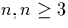

The results of EPR and ENDOR concerning thermal donors are well summarised in [10,231]. Relatively high TD concentration is required which corresponds to quite long sample anneal times, and hence EPR and ENDOR has only ever been applied to the thermal donors TD, since TD1 and TD2 anneal out before the experiments are performed [232].
EPR detects two different types of heat treatment centre in Si, NL8
and NL10 [233,204]. These have since been
identified as the singly positive charge states of the thermal donors
and shallow thermal donors respectively. The symmetry of these was
shown to be orthorhombic-I, or C2v, with possible small
deviations [207]. Thus they have two perpendicular (110)
mirror planes and a twofold axis
 100
100 [234,204]. Longer anneals showed a shift
in the g-tensor, indicating the gradual change from earlier TDs to
later species in the family. The anisotropy of the g-tensor
suggested the NL8 defects were shallow, but not as shallow as the NL10
centres. No hyperfine splitting of the spectrum was observed with
17O, since the hyperfine interaction is below the detection limit
of EPR [210,235].
[234,204]. Longer anneals showed a shift
in the g-tensor, indicating the gradual change from earlier TDs to
later species in the family. The anisotropy of the g-tensor
suggested the NL8 defects were shallow, but not as shallow as the NL10
centres. No hyperfine splitting of the spectrum was observed with
17O, since the hyperfine interaction is below the detection limit
of EPR [210,235].
ENDOR showed s-type character to the donor wavefunction, indicative of a shallow EMT donor [10]. Only super-hyperfine interactions (shf) with Si and O were observed, suggesting that no other impurities are involved in the centres. It failed to detect a single Si atom with prominent spin localisation, suggesting that the donor activity does not originate from a single Si atom [10]. Examination of the 17O shf interaction showed the O lies in a (110) plane [235,232]. No evidence of an electrically active core was found, including no signal corresponding to oxygen lying on the C2 axis. Notably ENDOR did not detect a change in the number of oxygen atoms in the different TD centres, in contradiction with other techniques such as FTIR [10]. However the number of 17O signals increases with long anneal time, suggesting oxygen addition [231], and analysis of the growth in 29Si and 17O signals with time shows an over-proportional increase in 17O signal, i.e. the amount of oxygen per thermal donor seems to be increasing with anneal time. The TDs which anneal out earlier have deeper donor states as can be seen by their 29Si shf interaction [231], i.e. the later TDs in the series have increasingly shallow levels. There were two shells of oxygen nuclei observed [232]. Thus, since the defect possesses C2v symmetry it was assumed this translated into four oxygen atoms [232]. ENDOR also shows that each TD has only one Si atom on the C2 axis[231,232].
So to summarise, EPR and ENDOR provide a great deal of information
about the core structure of the thermal donor. It must have C2v
symmetry, contain only O and Si, with all O lying in the  110
110 plane. It can only have one Si atom on the C2 axis (which cannot
be the sole source of defect activity) and no oxygen atoms. The core
O atoms then lie in two distinct shells, and coupled with the planar
constraint on oxygen that implies at least four oxygen atoms in the
core. The addition of further oxygen atoms must not change the core
signal, however ENDOR predicts the addition of oxygen to TDs with
annealing, leading to increasingly shallow levels.
plane. It can only have one Si atom on the C2 axis (which cannot
be the sole source of defect activity) and no oxygen atoms. The core
O atoms then lie in two distinct shells, and coupled with the planar
constraint on oxygen that implies at least four oxygen atoms in the
core. The addition of further oxygen atoms must not change the core
signal, however ENDOR predicts the addition of oxygen to TDs with
annealing, leading to increasingly shallow levels.